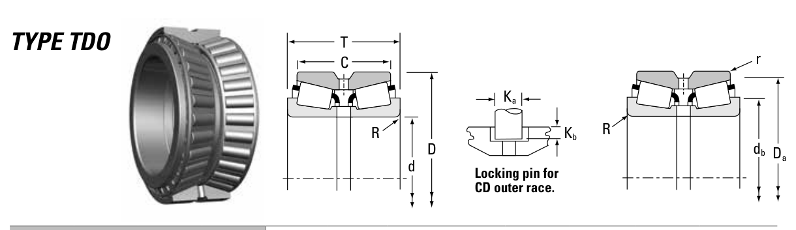

Original catalogue drawing - Timken TRB Catalog, page 556

Scanned from the manufacturer catalogue page listing this part number. All part numbers printed on that table share the same drawing.
Scale cross-section
Blue = inner / outer ring, yellow = rolling element. Drawn to scale from this part's own
dimensions for selection reference only - not a manufacturing or assembly drawing.
Dimension table (mm / inch)
Symbol
Dimension
mm
inch
d
Bore diameter
107.95
4.25
D
Outside diameter
165.1
6.5
T
Overall assembly width
82.55
3.25
C
Cup / outer-ring width
63.5
2.5
r
Chamfer (min)
0.8
0.0315
Notes
Tapered roller bearings are cone / cup assemblies; cone and cup weights are listed separately and the total is their sum. Weights are given in kg. Load ratings are shown in both the original catalogue units and the converted value (1 N = 0.2248 lbf). Data is provided for selection reference only - confirm against the latest official catalogue before ordering.
Main dimensions
Bore d (mm)
107.950
Bore d (in)
4.2500
Outside dia. D (mm)
165.100
Outside dia. D (in)
6.5000
Overall width T (mm)
82.550
Overall width T (in)
3.2500
Cup width C (mm)
63.500
Cup width C (in)
2.5000
Load ratings & speeds
Basic dynamic load rating Cr (lbs)
88600
Basic dynamic load rating Cr (N)
394000
Dynamic rating C1 (N, ISO)
394000
Dynamic rating C1 (lbf, ISO)
88600
Radial rating C90 (N)
58700
Radial rating C90 (lbf)
13200
Thrust rating Ca90 (N)
50000
Thrust rating Ca90 (lbf)
11200
Factor e
0.50
Factor Y1
1.36
Factor Y2
2.02
Factor K
1.18
Geometry factor G1
190.9
Geometry factor G2
47.7
Geometry factor Cg
0.1584
Weight
Weight (kg)
6.37
Mounting dimensions (fillets / shoulders)
Shaft fillet R max (mm)
3.5
Housing fillet r max (mm)
0.8
Shaft shoulder db (mm)
123.0
Housing shoulder Da (mm)
159.0
Bearing life (ISO 281 basic rating life)
C / P
Equivalent load P (N)
L10 (106 rev)
L10h at 500 rpm
4
98,500
102
3,386
6
65,667
392
13,083
8
49,250
1,024
34,133
10
39,400
2,154
71,814
15
26,267
8,323
277,449
Basic rating life per ISO 281: L10 = (C/P)10/3 with C = 394,000 N. Hours = L10 x 106 / (60n). Life-modification factors for lubrication, contamination and temperature (aISO) are not included.
Source & traceability
Brand
Timken
Source catalogue
Timken Tapered Roller Bearing Catalog (2016)
Catalogue page
p.556 (dimensions)
Series type
TDO
ISO dynamic rating C1, Timken C90 / Ca90, static rating C0, geometry factors and assembly weight.
Send us the quantity you need and we will come back with price and
lead time, normally within 24 hours. Equivalent parts from other brands can be quoted at the same time.